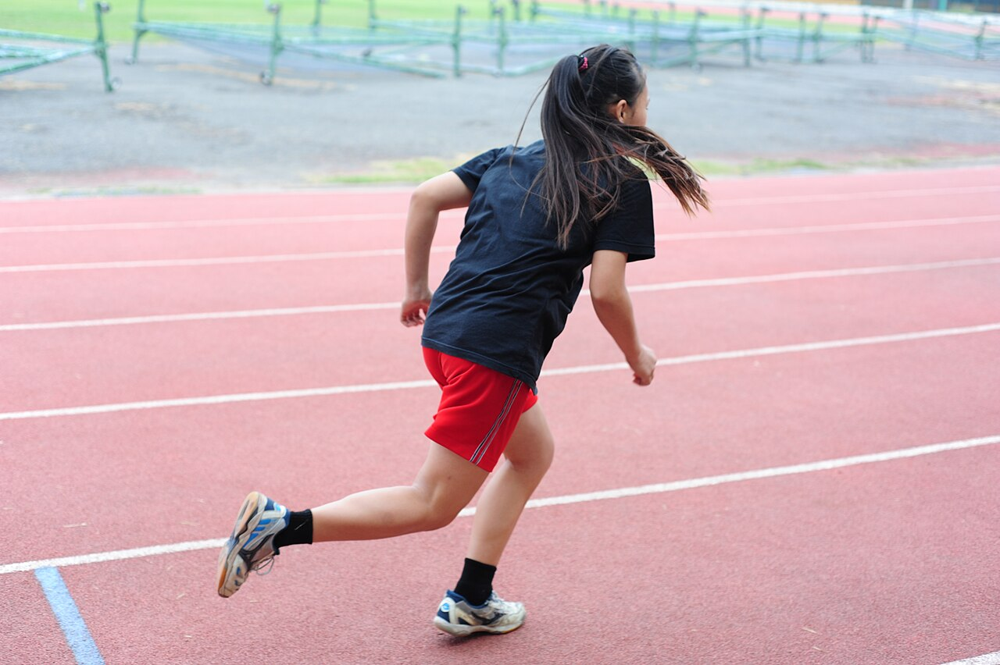

Yugurish miyani o'stiradimi?
Sport faqat tana uchun emas. Tadqiqotlar jismoniy mashq xotira markazining hajmini oshirishi mumkinligini ko'rsatgan.

Miyaning chuqur qismida dengiz otiga o'xshash kichik tuzilma bor — gippokamp. U yangi xotiralarni shakllantirishda muhim rol o'ynaydi. Yosh o'tgan sari gippokamp asta kichrayadi. Olimlar savol berishdi: sport buni to'xtata oladimi?
Bir yillik tajriba
2011-yilda Kirk Erikson va hamkasblari PNAS jurnalida 120 nafar keksa yoshdagi odam ishtirok etgan tajribani e'lon qilishdi. Bir guruh haftasiga 3 marta 40 daqiqadan tez yurish bilan shug'ullandi, ikkinchi guruh esa faqat cho'zilish mashqlarini bajardi.
Bir yildan keyin yuruvchilarning gippokampi taxminan 2% kattalashgan, cho'zilish guruhida esa odatdagidek kichraygan. Mualliflar buni yoshga bog'liq yo'qotishni 1–2 yilga “orqaga qaytarish” deb baholadi. Gippokamp hajmining o'sishi qondagi BDNF — nerv hujayralari o'sishini qo'llab-quvvatlovchi modda — darajasi bilan ham bog'liq bo'lgan.

Eng yaxshi “miya vitamini” — dorixonada emas, yugurish yo'lakchasida.
Halol bo'lish uchun
Boshqa olimlar tadqiqotga izoh yozib, xotira testlarida ikki guruh o'rtasidagi farq aniq emasligini ta'kidlashgan. Ya'ni hajm o'sgani tasdiqlangan, lekin bu xotirani qanchalik yaxshilashi hali munozarali. Shunga qaramay, sport uyqu, kayfiyat va stress uchun foydali ekanligi ko'plab tadqiqotlarda ko'rsatilgan — bularning hammasi o'qishga bevosita ta'sir qiladi.
O'quvchi uchun reja
- Haftasiga 3 marta. 30–40 daqiqa yurish, yugurish yoki futbol.
- O'qishdan oldin harakat. 10 daqiqalik tez yurish diqqatni yangilaydi.
- Tanaffusda turing. Har soatda bir marta o'rningizdan turib yuring.
- Uyquni unutmang. Sport + yaxshi uyqu — eng kuchli kombinatsiya.
Manba: Erickson va boshq., “Exercise training increases size of hippocampus and improves memory”, PNAS, 2011; Coen, Lawlor & Kenny, izoh maktubi, PNAS, 2011. Matn — o'zbek tilidagi erkin qisqacha bayon.